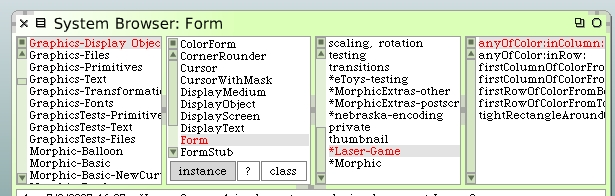

Better Hint Arrows Alignment
Since we're fixing annoying little bugs, I have another one to go after. The drawing of the hint arrows has always been a little funny. The arrows never appear where I think they should within a mirror cell. With these new larger (50 x 50) cells, it's even more obvious that the arrows are off-center. I'd like to fix that.
This problem originates from the early work where we created the various arrow forms. We started out with arbitrary white forms that were big enough to hold whatever arrow shape we created. And then we saved those forms. The issue is that the arrows themselevs were never drawn to be centered within the white rectangles and so the black portion of the arrow forms, the part we use, is almost always way off-center.
Our path to correction is to add some code to prune back the finished rectangle to be just large enough to hold the completed arrow. We can then save that trimmed form. Once we get the form sized correctly it's a simple matter to go back and fix the arrow offset calculations within the renderers.
Let's begin. The first thing we will do is to add some extension methods to the Form class. Open a class browser on the Form class and create a new protocol named "*Laser-Game". This will cause methods we create as part of this protocol to be included in our Monticello package.
Now add the following instance methods to that protocol.
anyOfColor: aColor inColumn: int
| color |
1 to: self height do: [:row |
color := self colorAt: int@row.
color = aColor ifTrue: [^true]].
^false
anyOfColor: aColor inRow: int
| color |
1 to: self width do: [:column |
color := self colorAt: column@int.
color = aColor ifTrue: [^true]].
^false
firstColumnOfColorFromLeft: aColor
| x |
x := 1.
[self anyOfColor: aColor inColumn: x] whileFalse: [
x := x + 1.
x >= self width ifTrue: [^nil]].
^x
firstColumnOfColorFromRight: aColor
| x |
x := self width.
[self anyOfColor: aColor inColumn: x] whileFalse: [
x := x - 1.
x <= 1 ifTrue: [^nil]].
^x
firstRowOfColorFromBottom: aColor
| y |
y := height.
[self anyOfColor: aColor inRow: y] whileFalse: [
y := y - 1.
y <= 1 ifTrue: [^nil]].
^y
firstRowOfColorFromTop: aColor
| y |
y := 1.
[self anyOfColor: aColor inRow: y] whileFalse: [
y := y + 1.
y >= self height ifTrue: [^nil]].
^y
tightRectangleAroundColor: aColor
| left right top bottom |
left := self firstColumnOfColorFromLeft: aColor.
right := self firstColumnOfColorFromRight: aColor.
top := self firstRowOfColorFromTop: aColor.
bottom := self firstRowOfColorFromBottom: aColor.
^left@top corner: right@bottom
These methods will answer a rectangle that is close-in around a form with a given color. This will work in our case since we are using single pixel depth forms of black on white. Also, these methods aren't too careful about what happens when we don't find the color we want.